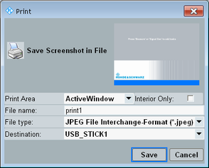

The "Print" dialog saves a screenshot to a file.
To open the dialog box, press the PRINT key on the (soft-) front panel, or the button.

Selects the part of the screen to be captured. A preview of the resulting screenshot is displayed at the top of the dialog box.
You can capture the currently active window or the main window or the complete screen.
Remote command:This setting is available if you capture a window in single-window mode.
With disabled checkbox, the entire window is captured. With enabled checkbox, only the interior of the window is captured.
For the "CMW" window, the interior excludes the hotkey bar and the softkey bar.
Specifies the file name to be used.
A default file name is proposed and the suffix is incremented automatically. You can edit the field to specify a different file name.
Selects the file format, for example bmp, jpeg or png.
Remote command:Selects the folder to which the file is saved.
You can save the file to a fixed predefined destination on the system drive or to a connected USB memory stick.
Press the "Save" button to store the screenshot. The following commands also save a screenshot.
Remote command: